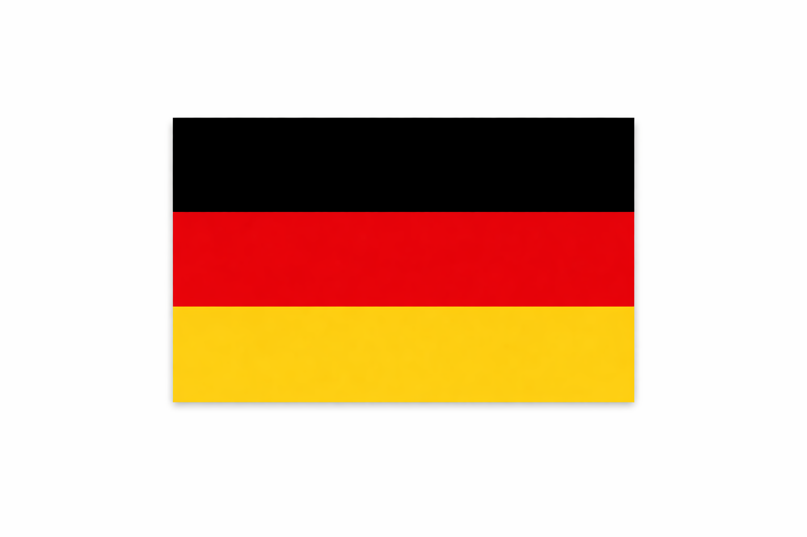
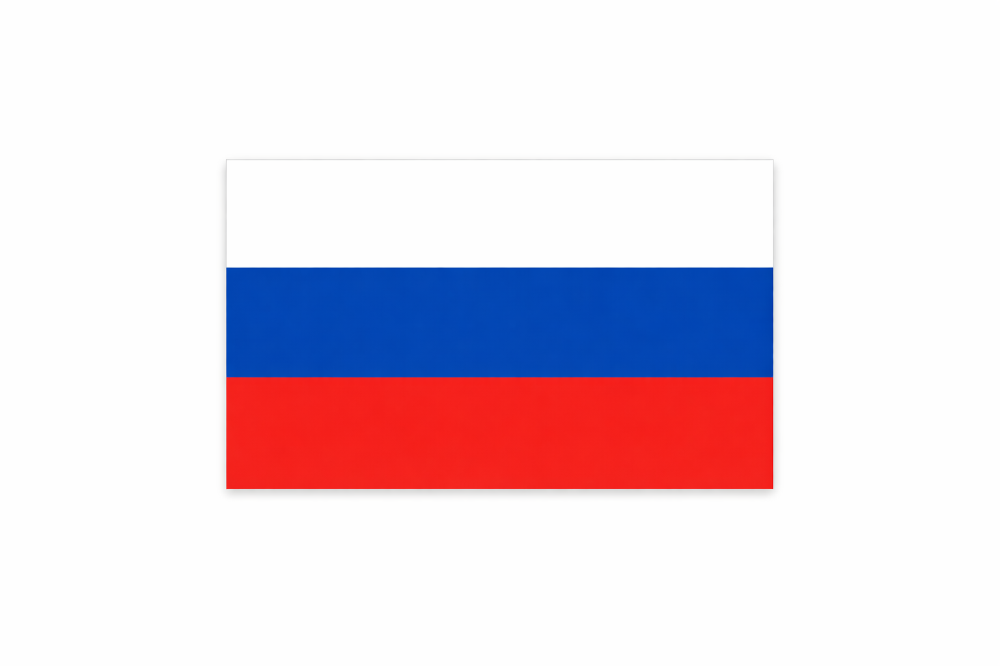
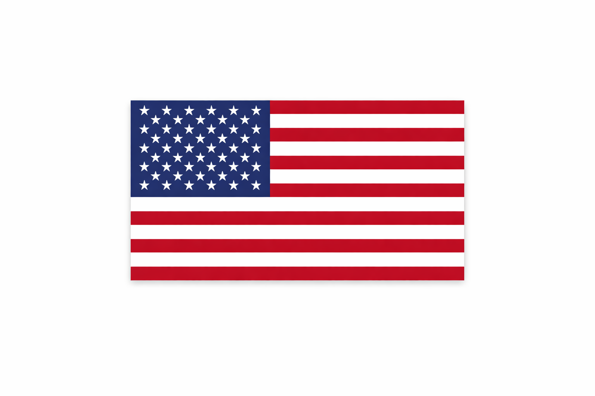
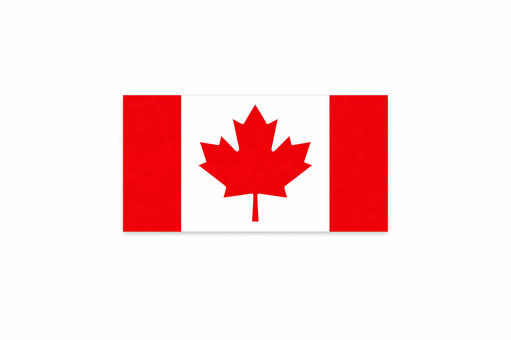

When deciding the ranking of the top five countries in the Winter Olympics using a weighted medal system,
each medal type is assigned a specific value—3 points for gold, 2 for silver, and 1 for bronze. Countries are
then ranked by their total point score rather than by raw medal count. This method still rewards overall
depth, but it places greater emphasis on top-level performance by valuing gold medals most heavily,
followed by silver and bronze. As a result, nations that consistently finish at the top of events gain a clearer
advantage over those with many lower-place finishes. Using this approach often reshuffles standings
compared to a simple medal count, but countries like Norway, Germany, United States, Canada, and Russia
still tend to rank highly due to their ability to convert strong performances into gold-medal finishes.
Ranked List
-
Norway
Norway dominates winter sports, especially cross-country skiing, biathlon, and alpine events, where it
racks up a huge number of gold medals. Their strength lies in depth and specialization, making them
the clear leader in weighted rankings. -
Germany
Germany excels in sliding sports like bobsleigh, luge, and skeleton, where gold medals are often
repeated across Games. Their technical precision and consistency keep their weighted score extremely
high.
-
Russia
Russia’s strength is power-based and technical events such as figure skating, speed skating, and cross-
country skiing. While totals fluctuate by Games, their gold-heavy performances push them near the top
in weighted systems.
-
United States
The U.S. performs best in snowboarding, freestyle skiing, and speed skating, often converting podium
finishes into golds. Their advantage comes from excelling in newer and high-visibility winter sports.
-
Canada
Canada is strongest in ice hockey, speed skating, and freestyle events, where gold medals carry
significant weight. Their balanced success across ice and snow sports keeps them firmly in the top tier.